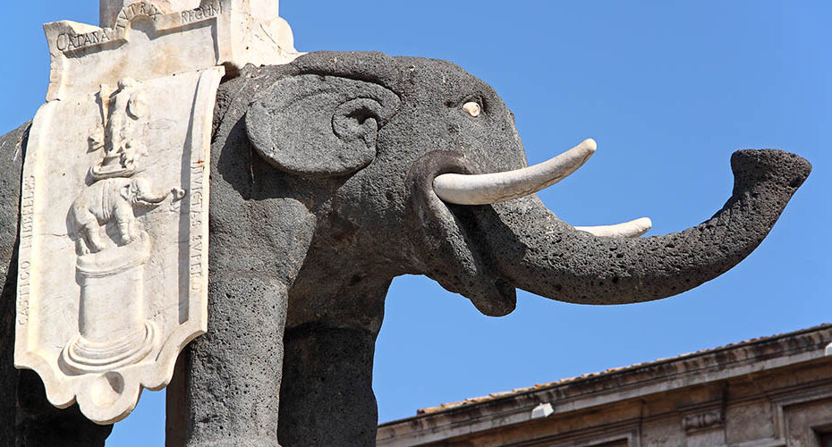

Piazza Duomo a Catania

La sua storia
L'attuale fisionomia di Piazza Duomo è il risultato di una sfida vinta contro la distruzione. Dopo il catastrofico terremoto del 1693, Catania era un cumulo di macerie; l'architetto Giovanni Battista Vaccarini ricevette l'incarico di ricostruire il centro nevralgico della città applicando i principi dell'urbanistica barocca: ampiezza, simmetria e prospettiva. Egli concepì la piazza come un rettangolo arioso dove convergono le tre arterie principali (Via Etnea, Via Garibaldi, Via Vittorio Emanuele), trasformandola in una camera di decompressione visiva per chi giungeva dalle strade strette. Al centro venne collocato il monumento dell'Elefante, un manufatto che riassume la storia ibrida della città: il corpo dell'animale è in pietra lavica di epoca romana, l'obelisco è egizio, mentre l'allestimento barocco è del XVIII secolo. Questo monumento è il fulcro di un dialogo architettonico costante tra il Palazzo degli Elefanti (sede del Comune), il Palazzo dei Chierici e la Cattedrale di Sant'Agata. La piazza non è solo un centro amministrativo, ma un simbolo di resilienza: ogni edificio è stato costruito con blocchi di basalto lavico e calcare, i colori della "città nera" che rinasce dalle proprie ceneri vulcaniche.

Elemento d'arredo
Fontana dell'Elefante (Liotru), simbolo della città
Dimensione
4.500 mq